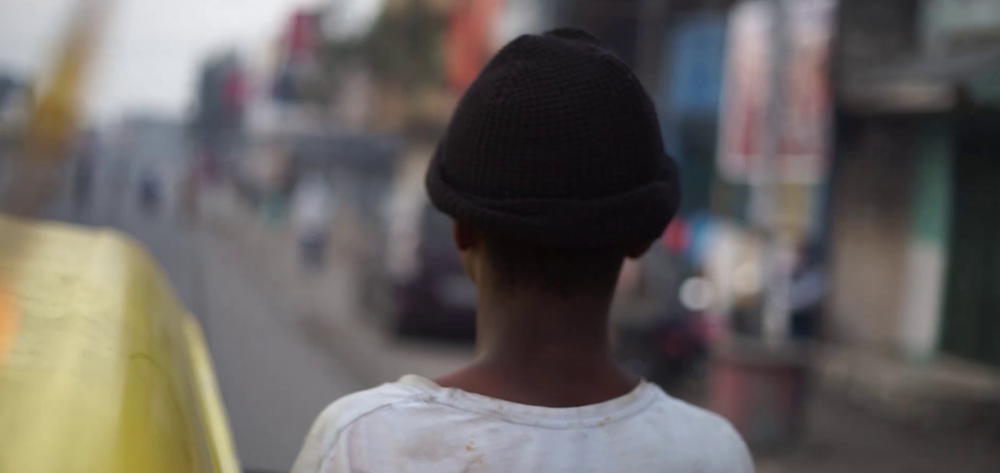

Details
- DirectorEli Maene
- Director of PhotographyEli Maene
- ProducersDanny Amisi, Eli Maene
- Co-ProducersLeo Nelki, Maisha Maene
- EditorsJohn Kibwe, Leo Nelki
- TypeShort Film
- Year2024

Beyond the headlines of war in Goma, resilience lives in the quiet rhythm of daily life.